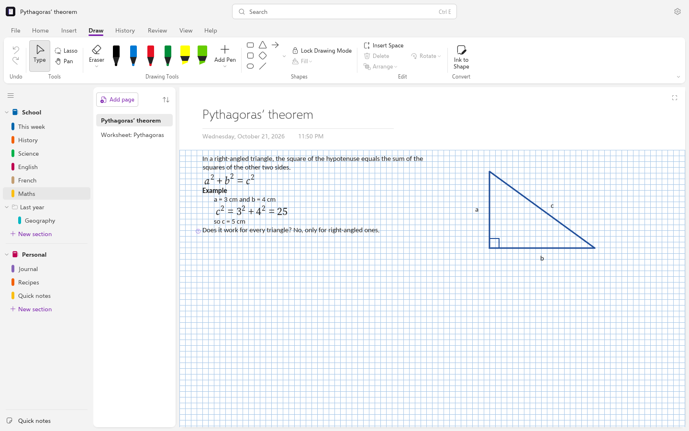
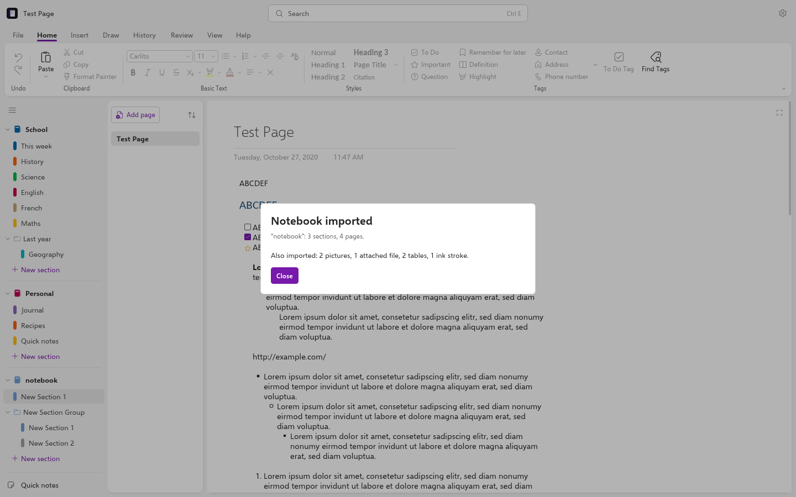

A notebook that stays yours.
Native notes for Linux, Windows and macOS that never leave your computer.
Open source, MIT OR Apache-2.0. No account, no telemetry.

Click anywhere. Type anything.
Pages have no fixed width. Notes sit where you put them and hold outlines nine levels deep.

Write on the page.
Pens, highlighters, erasers, shapes and Ink to Shape. Annotate a PDF printout, or draw a diagram beside your notes.

Bring your notebooks over.
Open a .onepkg package, a notebook folder or a single .one section. Folio copies it into a new notebook.
A report lists what came across and what did not.
- Package
.onepkg- Folder
.onetoc2folder- Section
.one

Your notes are a file.
One SQLite database and one attachments folder. Copy both to back up. No account, no sync service, no telemetry.
folio/
folio.db
attachments/- Storage
- SQLite
- Backup
- Copy the folder
- Network
- None

Read it back.
The Immersive Reader changes text size, line focus and reading theme, and can read the page aloud in the system’s voice.
Print a page through your browser, or export a page, section or whole notebook as web pages with its pictures and files.

Take it to your desk.
Builds for Linux, Windows and macOS, or compile with Rust 1.95.
| Platform | Status | Get it |
|---|---|---|
| Linux x86_64 | Tested | Release |
| Windows x86_64 | CI build | Release |
| macOS aarch64 | CI build | Release |